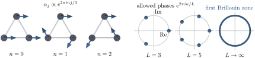
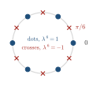
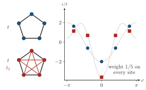

Page 3 of 11 of this session
2.4 Exercises where we guess eigenstates from symmetry only
What do we know about the eigenstates of a ring of \(L\) sites before we write its Hamiltonian? They can be chosen as the \(L\) Fourier modes, with the phases \(\varphi_n=2\pi n/L\), for any hopping that keeps the rotation of the ring. For an infinite chain this statement becomes Bloch’s theorem.
\[S|\psi\rangle = e^{i\varphi}|\psi\rangle, \qquad \varphi \in (-\pi,\pi]. \tag{2.2}\]
\[[H,S] = 0. \tag{2.3}\]
These are two results of Section 2.3. The eigenvalue of a unitary symmetry operator \(S\) is a phase, and when \(S\) commutes with the Hamiltonian \(H\), every eigenstate of \(H\) can be chosen as an eigenstate of \(S\).
We will now see with a sequence of small examples how much (2.3) gives us. In each example we add sites, and at the end we take the infinite limit.
Three sites on a ring. We take a tight-binding Hamiltonian on three sites in a triangle, with a symmetry \(R\) that rotates the triangle by \(120^\circ\). As in Section 2.3, \(R\) moves the amplitude of each site to the previous site, \((R\psi)_j=\psi_{j+1}\) with \(\psi_4=\psi_1\). Since \(R^3=\mathbb{1}\), any eigenvalue \(\lambda=e^{i\varphi}\) of \(R\) must satisfy \(\lambda^3=1\), and this fixes the allowed phases.
The rotation of a ring of three sites has \(R^3=\mathbb{1}\), so its eigenvalues \(e^{i\varphi_n}\) have the phases
\[\varphi_n = \frac{2\pi n}{3}, \qquad n=0,1,2. \tag{2.4}\]
On a ring of \(L\) sites \(R^L=\mathbb{1}\) gives in the same way \(\varphi_n=2\pi n/L\), with \(n=0,\dots,L-1\). Modulo \(2\pi\) this is the same set as the \(L\) phases in the range \((-\pi,\pi]\) of (2.2), and for example \(4\pi/3\) is the same phase as \(-2\pi/3\). The eigenstates of any Hamiltonian that keeps the rotation can be chosen as eigenstates of \(R\), which are the \(L\) Fourier modes and have the same modulus on every site.
So we know a lot about the eigenstates of \(H\) before we write \(H\) explicitly. They must have the form \(\alpha_1c_1^\dagger+\alpha_2c_2^\dagger+\alpha_3c_3^\dagger\). Since \(R\) permutes the sites in a cyclic way and multiplies the whole state by \(e^{i\varphi_n}\), the coefficients must have the same phase from one site to the next, \(\alpha_j\propto e^{i\varphi_n j}\). The eigenstates of any Hamiltonian with this rotational symmetry can be chosen as the three discrete Fourier modes on the ring, regardless of the values of the hopping amplitudes. Figure 2.1 shows the three modes explicitly, and it also shows how the set of allowed phases changes when the ring becomes larger.
The steps From the rotation of a ring to its Fourier modes
We write a state as \(\psi=\sum_j\alpha_jc_j^\dagger|0\rangle\), with the site \(j\) counted modulo \(L\), and we take an eigenstate of the rotation, \(R\psi=\mu\psi\). The rotation moves every amplitude to the previous site, \((R\psi)_j=\alpha_{j+1}\), as in Section 2.3.
The simplest case is three sites. Applying \(R\) three times brings every amplitude back to its site, so \(R^3=\mathbb{1}\) and \(\mu^3=1\), which gives the three phases of (2.4).
Then we compare the amplitudes of two neighbors. \(R\psi=\mu\psi\) says that the amplitude that arrives at each site from its neighbor is \(\mu\) times the amplitude that was there, \(\alpha_{j+1}=\mu\,\alpha_j\). So the ratio of two neighbors is the same number on every bond. After \(L\) bonds we are back at the first site, so \(\mu^L=1\), which gives \(\mu=e^{i\varphi_n}\) with \(\varphi_n=2\pi n/L\), and
\[\alpha_j=\alpha_0\,e^{i\varphi_n j}.\]
So this mode has the eigenvalue \(e^{i\varphi_n}\) of \(R\). A rotation in the other sense, which moves every amplitude to the next site, gives it the eigenvalue \(e^{-i\varphi_n}\). So the label \(n\) becomes \(-n\), and the set of modes is the same.
Since \(|\mu|=1\), every site has the same modulus, \(|\alpha_j|=|\alpha_0|\). The state is normalized, \(\sum_j|\alpha_j|^2=1\), so each site has the weight \(|\alpha_j|^2=1/L\), which is \(1/5\) on five sites.
The last step is the Hamiltonian. The \(L\) modes have \(L\) different eigenvalues of \(R\), so each eigenvalue of \(R\) has one state only. \(H\) commutes with \(R\), so it maps this state onto a state with the same eigenvalue of \(R\), which is the same state times a number. So every Fourier mode is an eigenstate of \(H\), for any hopping that keeps the rotation.

A ring has \(L=6\) sites and a rotation \(R\) with \(R^6=\mathbb{1}\). How many Bloch phases \(\varphi\) are allowed, and what is their spacing?
Show the answers
- A. ✗ False
This is false. The state \((1,-1,1,-1,1,-1)\) is an eigenstate of \(R\) with eigenvalue \(-1\), so \(\varphi=\pi\). This phase is not in the list \(0,\pm 2\pi/3\), which means that there are more than three.
- B. ✓ True
This is true. The eigenvalue satisfies \(\lambda^6=1\), so \(\varphi_n=2\pi n/6\) with \(n=0,\dots,5\). As \(L\) grows, the allowed phases come closer and fill the circle.
- C. ✗ False
This is false. The phase \(\varphi=\pi/6\) gives \(\lambda^6=e^{i\pi}=-1\), which is not \(1\). So this phase is not allowed on a ring of six sites.

The twelve phases with spacing \(\pi/6\). On a ring of six sites only the six dots satisfy \(\lambda^6=1\), and the crosses give \(\lambda^6=-1\).
The number of allowed phases equals the number of sites of the ring.
Five sites on a ring. The same argument on a five-site ring with nearest-neighbor hopping, \(H=\sum_{\langle ij\rangle} c_i^\dagger c_j\), gives \(\varphi_n=2\pi n/5\), \(n=0,\dots,4\), and the eigenstates \(|\Psi_n\rangle \propto \sum_{j=0}^4 e^{i\varphi_n j}\,c_j^\dagger|0\rangle\). With this we can already answer a quantitative question without diagonalizing anything. Let us ask what the weight of site 1 is in the lowest-energy eigenstate built from the vacuum \(|\Omega\rangle\), in the sense of the overlap \(\big|\langle\Omega|c_1\Psi_{\rm GS}^\dagger|\Omega\rangle\big|^2\). Every \(|\Psi_n\rangle\) is a superposition over all five sites with the same modulus on each site, so this overlap is \(1/5\) for every \(n\), for the lowest energy and for all other states. This holds once we choose the eigenstates as these Fourier modes. It follows from the symmetry only, and it does not depend on the specific hopping amplitudes.
The same argument stays valid if the nearest-neighbor hopping is replaced by any long-range hopping, and a six-site ring with additional long-range couplings shows the same thing. As long as the rotational symmetry of the ring is present, the symmetry eigenvalues are fixed by symmetry only. The eigenstates can then be chosen as the Fourier modes, with the weight \(1/L\) on each site, however complicated the Hamiltonian becomes. We see this in Schematic 2.5 for the ring of five sites with a second-neighbor hopping.

g1_ring_five_sites.py
The hoppings of a ring of \(L\) sites keep its rotation. An eigenstate is a Fourier mode. What is the weight of one site in it?
Show the answers
- A. ✓ True
This is true. A Fourier mode has the same modulus on every site, and the weights add up to one. So each site has the weight \(1/L\), regardless of the hopping.
- B. ✗ False
This is false. Take \(t=1\) and a second-neighbor hopping \(\eta=0.3\) on \(L=6\). The eigenstates can be chosen as the same Fourier modes as for \(\eta=0\), and each site has the weight \(1/6\) in them.
- C. ✗ False
This is false. For \(L=4\) the mode \((1,i,-1,-i)/2\) has the weight \(1/4\) on every site, including the first one. All the sites are equivalent by the rotation.
The weights are equal because the rotation maps every site into every other one.
A ring has five sites, \(j=0,\dots,4\). Its Hamiltonian \(H\) keeps the rotation of the ring. Which coefficients \(\alpha_j\) give an eigenstate of every such \(H\)?
Show the answers
- A. ✗ False
This is false. The state sits on one site, and the rotation moves it to a neighbor, so it is not an eigenstate of the rotation. With the first-neighbor hopping \(-t\), \(H\) puts the amplitude \(-t\) on the sites 1 and 4, so the state spreads.
- B. ✗ False
This is false. Five steps of \(\pi/5\) give \(e^{i\pi}=-1\) and not \(1\), so the phase does not close around the ring. With the first-neighbor hopping \(-t\), \((H\alpha)_j/\alpha_j\) is \(-1.62\,t\) on the site 1 and \(-1.18i\,t\) on the site 0, which are not the same number.
- C. ✓ True
This is true. The phase turns by \(2\pi/5\) on every bond and closes after five sites, since \(e^{2\pi i}=1\). So the rotation multiplies the state by one phase, and no other mode of the ring has this phase. \(H\) commutes with the rotation, so it maps the state onto itself times a number.
The allowed phases close around the ring, and on five sites each of them belongs to one mode only.
Note that such models with few sites are not only of academic interest. With a scanning tunneling microscope (STM) one can place single atoms one by one, and chains of gold atoms built in this way have been measured, in this article.
The infinite chain. Now we let the ring grow without limit, so that it becomes an infinite one-dimensional chain with nearest-neighbor hopping. The relevant symmetry is a translation by one site, \(T: c_n^\dagger \to c_{n-1}^\dagger\), which shifts a wavefunction \(\psi_n\) on the sites to \(\psi_{n+1}\). We have \([H,T]=0\) for any Hamiltonian whose hoppings depend only on the distance between sites and not on the absolute position. By Section 2.3, \(H\) and \(T\) have a common eigenbasis, and by (2.2) the eigenvalue of \(T\) in this common eigenbasis is a pure phase \(e^{i\varphi}\). This \(\varphi\) is called the Bloch phase. Applied to a system with translational symmetry, the statement that \(H\) and \(T\) have a common eigenbasis is Bloch’s theorem. The relation between this phase and the corresponding energy of the Hamiltonian is what we call the dispersion relation of a periodic system.
A ring of six sites has the first-neighbor hopping \(-t\). Use the rotation to find the six energies without writing a matrix. How many different levels are there, and what is the total energy of three spinless electrons?
Solution
The eigenstates can be chosen as the Fourier modes \(\alpha_j=e^{i\varphi_nj}/\sqrt6\), with \(\varphi_n=2\pi n/6\) and \(n=0,\dots,5\). On such a mode the Hamiltonian gives
\[(H\alpha)_j=-t\,(\alpha_{j+1}+\alpha_{j-1})=-t\,(e^{i\varphi_n}+e^{-i\varphi_n})\,\alpha_j=-2t\cos\varphi_n\,\alpha_j,\]
so the energy of the mode \(n\) is \(-2t\cos(\pi n/3)\). This is \(-2t\) for \(n=0\), \(-t\) for \(n=1\) and \(5\), \(t\) for \(n=2\) and \(4\), and \(2t\) for \(n=3\). So there are four different levels, \(-2t\), \(-t\), \(t\) and \(2t\), and the two in the middle hold two states each, the modes \(\varphi\) and \(-\varphi\). Three spinless electrons fill the level \(-2t\) and the two states at \(-t\), with the total energy \(-2t-t-t=-4t\).
These are the levels of the \(\pi\) orbitals of a benzene ring in the simplest tight-binding model. Its six \(\pi\) electrons, with both spins, fill the levels \(-2t\) and \(-t\), with the total energy \(-8t\).